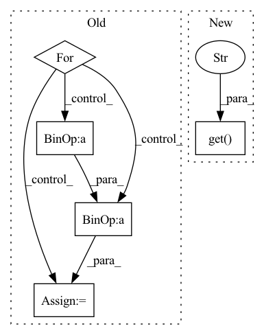

Pattern ID :9
Before Change
self.avgpool = nn.AvgPool2d(7)
self.fc = nn.Linear(scale * 8 * block.expansion, num_classes)
for m in self.modules():
if isinstance(m, nn.Conv2d):
n = m.kernel_size[0] * m.kernel_size[1] * m.out_channels
m.weight.data.normal_(0, math.sqrt(2. / n))
elif isinstance(m, nn.BatchNorm2d):
m.weight.data.fill_(1)After Change
self.inplanes = scale
self.for_test = for_test
super(ResNet, self).__init__()
self.use_non_local = kwargs.get("use_non_local" , False)
self.conv1 = nn.Conv2d(3, scale, kernel_size=7, stride=2, padding=3,
bias=False)
self.bn1 = nn.BatchNorm2d(scale)In pattern: SUPERPATTERN
Frequency: 3
Non-data size: 5
Instances Fragment ID: 26336
Project Name: tencentyouturesearch/personreid-cacenet
Commit Name: 4d9262404af939b4964e96ef3ee86a988de77910
Time: 2020-12-11
Author: fufuyu@tencent.com
File Name: models/backbones/resnet_ibn_a.py
M Class Name: ResNet
N Class Name: ResNet
M Method Name: __init__(6)
N Method Name: __init__(6)
M Parent Class: nn.Module
N Parent Class: nn.Module
M File Name: models/backbones/resnet_ibn_a.py
N File Name: models/backbones/resnet_ibn_a.py
M Start Line: 141
M End Line: 152
N Start Line: 138
N End Line: 138
Before Change
self.avgpool = nn.AvgPool2d(7)
self.fc = nn.Linear(scale * 8 * block.expansion, num_classes)
for m in self.modules():
if isinstance(m, nn.Conv2d):
n = m.kernel_size[0] * m.kernel_size[1] * m.out_channels
m.weight.data.normal_(0, math.sqrt(2. / n))
elif isinstance(m, nn.BatchNorm2d):
m.weight.data.fill_(1)After Change
self.inplanes = scale
self.for_test = for_test
super(ResNet, self).__init__()
self.use_non_local = kwargs.get("use_non_local" , False)
self.conv1 = nn.Conv2d(3, scale, kernel_size=7, stride=2, padding=3,
bias=False)
self.bn1 = nn.BatchNorm2d(scale) Fragment ID: 26329
Project Name: tencentyouturesearch/personreid-youreid
Commit Name: 4d9262404af939b4964e96ef3ee86a988de77910
Time: 2020-12-11
Author: fufuyu@tencent.com
File Name: models/backbones/resnet_ibn_a.py
M Class Name: ResNet
N Class Name: ResNet
M Method Name: __init__(6)
N Method Name: __init__(6)
M Parent Class: nn.Module
N Parent Class: nn.Module
M File Name: models/backbones/resnet_ibn_a.py
N File Name: models/backbones/resnet_ibn_a.py
M Start Line: 141
M End Line: 152
N Start Line: 138
N End Line: 138
Before Change
if "raw_points" in self.model_cfg.FEATURES_SOURCE:
mlps = SA_cfg["raw_points"].MLPS
for k in range(len(mlps)):
mlps[k] = [num_rawpoint_features - 3] + mlps[k]
self.SA_rawpoints = pointnet2_stack_modules.StackSAModuleMSG(
radii=SA_cfg["raw_points"].POOL_RADIUS,After Change
continue
self.downsample_times_map[src_name] = SA_cfg[src_name].DOWNSAMPLE_FACTOR
if SA_cfg[src_name].get("INPUT_CHANNELS" , None) is None:
input_channels = SA_cfg[src_name].MLPS[0][0] \
if isinstance(SA_cfg[src_name].MLPS[0], list) else SA_cfg[src_name].MLPS[0]
else: Fragment ID: 26332
Project Name: open-mmlab/openpcdet
Commit Name: 13789796f70a033435a8289b3e1361000fc4694c
Time: 2021-12-26
Author: shaoshuaics@gmail.com
File Name: pcdet/models/backbones_3d/pfe/voxel_set_abstraction.py
M Class Name: VoxelSetAbstraction
N Class Name: VoxelSetAbstraction
M Method Name: __init__(6)
N Method Name: __init__(6)
M Parent Class: nn.Module
N Parent Class: nn.Module
M File Name: pcdet/models/backbones_3d/pfe/voxel_set_abstraction.py
N File Name: pcdet/models/backbones_3d/pfe/voxel_set_abstraction.py
M Start Line: 132
M End Line: 173
N Start Line: 132
N End Line: 166